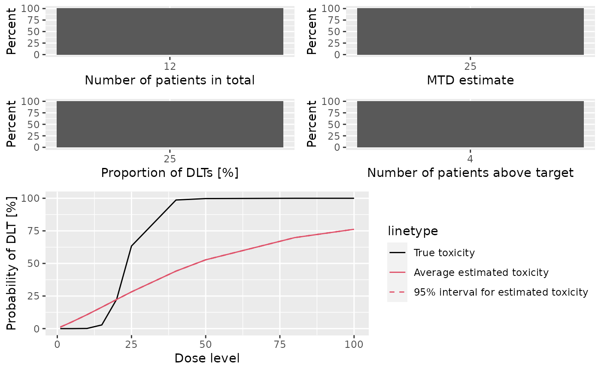

R/Simulations-methods.R
plot-SimulationsSummary-missing-method.RdGraphical display of the simulation summary
# S4 method for SimulationsSummary,missing plot( x, y, type = c("nObs", "doseSelected", "propDLTs", "nAboveTarget", "meanFit"), ... )
| x | the |
|---|---|
| y | missing |
| type | the types of plots you want to obtain. |
| ... | not used |
A single ggplot object if a single plot is
asked for, otherwise a gridExtra{gTree} object.
This plot method can be applied to SimulationsSummary
objects in order to summarize them graphically. Possible type of
plots at the moment are those listed in
plot,GeneralSimulationsSummary,missing-method plus:
Plot showing the average fitted dose-toxicity curve across
the trials, together with 95% credible intervals, and comparison with the
assumed truth (as specified by the truth argument to
summary,Simulations-method)
You can specify any subset of these in the type argument.
# Define the dose-grid emptydata <- Data(doseGrid = c(1, 3, 5, 10, 15, 20, 25, 40, 50, 80, 100)) # Initialize the CRM model model <- LogisticLogNormal(mean=c(-0.85, 1), cov= matrix(c(1, -0.5, -0.5, 1), nrow=2), refDose=56) # Choose the rule for selecting the next dose myNextBest <- NextBestNCRM(target=c(0.2, 0.35), overdose=c(0.35, 1), maxOverdoseProb=0.25) # Choose the rule for the cohort-size mySize1 <- CohortSizeRange(intervals=c(0, 30), cohortSize=c(1, 3)) mySize2 <- CohortSizeDLT(DLTintervals=c(0, 1), cohortSize=c(1, 3)) mySize <- maxSize(mySize1, mySize2) # Choose the rule for stopping myStopping1 <- StoppingMinCohorts(nCohorts=3) myStopping2 <- StoppingTargetProb(target=c(0.2, 0.35), prob=0.5) myStopping3 <- StoppingMinPatients(nPatients=20) myStopping <- (myStopping1 & myStopping2) | myStopping3 # Choose the rule for dose increments myIncrements <- IncrementsRelative(intervals=c(0, 20), increments=c(1, 0.33)) # Initialize the design design <- Design(model=model, nextBest=myNextBest, stopping=myStopping, increments=myIncrements, cohortSize=mySize, data=emptydata, startingDose=3) ## define the true function myTruth <- function(dose) { model@prob(dose, alpha0=7, alpha1=8) } # Run the simulation on the desired design # We only generate 1 trial outcomes here for illustration, for the actual study # this should be increased of course options <- McmcOptions(burnin=10, step=1, samples=100) time <- system.time(mySims <- simulate(design, args=NULL, truth=myTruth, nsim=1, seed=819, mcmcOptions=options, parallel=FALSE))[3] # Plot the Summary of the Simulations plot(summary(mySims,truth=myTruth)) 